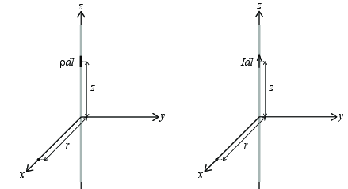

Figuren viser to systemer. Systemet til venstre viser en linjeladning og systemet til høyre viser en linjestrøm. Vi skal sammenlikne de to systemene for å se hvordan vi kan overføre ferdighetene vi har i å analysere og regne på linjeladninger til å kunne regne på linjestrømmer. Det er viktige likhetspunkter og forskjeller som vi skal se på i detalj.

Vi starter med å repetere hvordan vi fant feltet for linjeladningen i systemet til venste. Vi skal finne bidraget til det elektriske feltet i punktet \( (r,0,0) \) fra ladningselementet \( \rho \d l \) i punktet \( (0,0,z) \).
a) Tegn inn \( \vec{R} \)-vektor i figuren og finn et uttrykk for \( \vec{R} \)-vektor.
b) Hvordan kunne du argumentere for at det elektriske feltet kun vil ha en radiell komponent – dvs. at det kun vil være en komponent i \( x \)-retningen i et punkt langs \( x \)-aksen.
For hvert ladningselement \( \rho \d l \) vil det også finnes et ladningselement symmetrisk om \( xy \)-planet, og \( z \)-bidraget fra hver av disse komponentene vil kansellere.
c) Skriv ned bidraget \( \d E_x \) til det elektriske feltet i punktet \( (r,0,0) \).
d) Skriv ned integralet du må løse for å finne det totale elektriske feltet. Hva blir integralet? (Det er helt greit å skrive svaret rett ned, hvis du husker det eller du er rask med Gauss lov).
Da er vi klar for å se på et liknende problem – en linjestrøm – som er vist i systemet til høyre. Vi skal finne bidraget til det magnetiske feltet i punktet \( (r,0,0) \) fra strømelementet \( I \d \vec{l} = I \d l \z \) i punktet \( (0,0,z) \).
e) Tegn inn \( \vec{R} \)-vektor i figuren og finn et uttrykk for \( \vec{R} \)-vektor.
f) Hvilken retning vil bidraget til \( \vec{B} \)-feltet ha for alle strømelementene langs \( z \)-aksen?
Vi ser av høyrehåndsregelen at alle bidragene blir rettet langs \( y \)-aksen.
g) Finn bidraget \( \d \vec{B} \) til det magnetiske feltet i punktet \( (r,0,0) \).
h) Skriv ned integralet du må løse for å finne det totale magnetiske feltet.
i) Kan du skrive ned løsningen på integralet direkte ved å sammenlikne med resultatet du fikk for det elektriske feltet?
j) Kan du kort oppsummere forskjellene mellom de to fremgangsmåtene?
Den viktigste forskjellen er forskjellen mellom å bruke \( \vec{R} \) direkte for å finne det elektriske feltet og \( \d \vec{l} \times \vec{R} \) for å finne det magnetiske feltet.